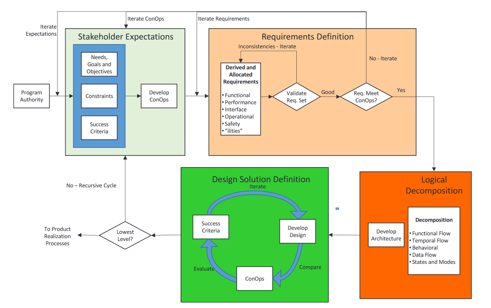
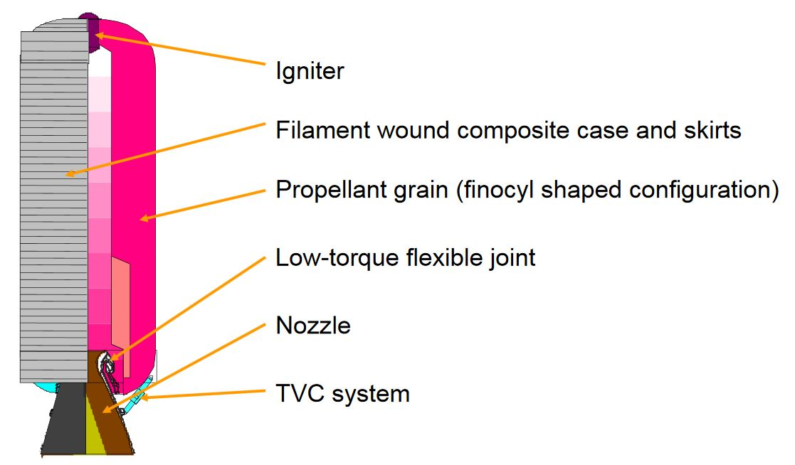
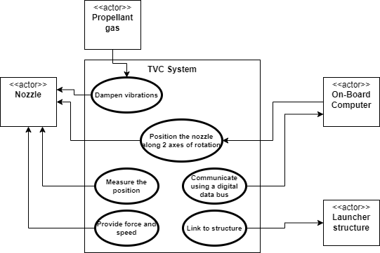
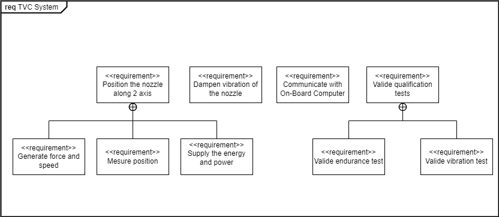
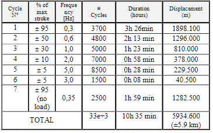
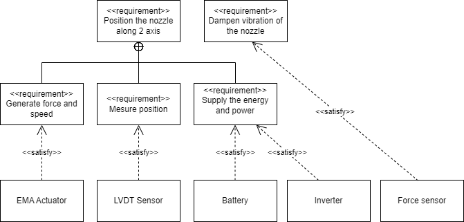
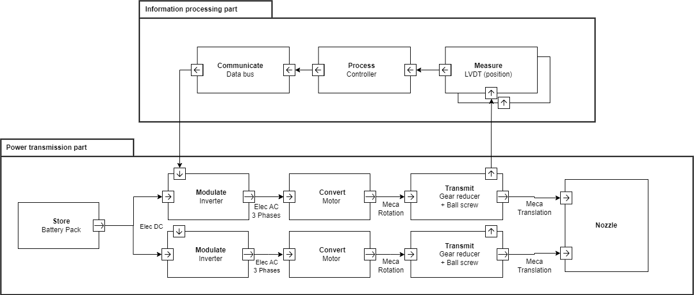
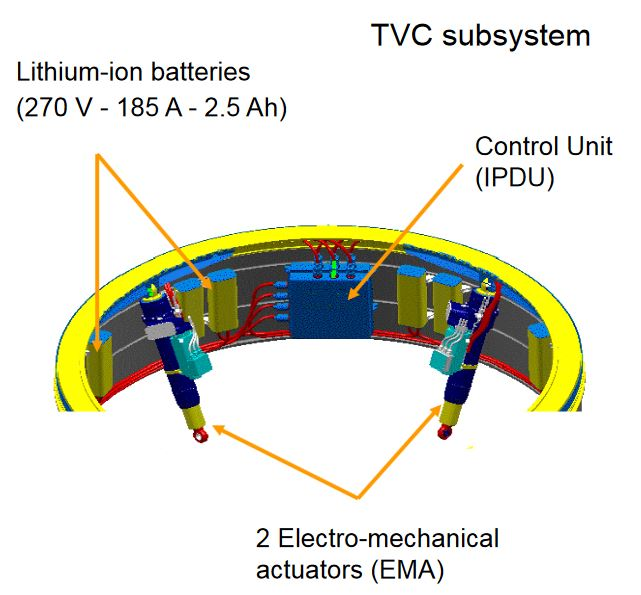

1.2. System engineering#
Written by Marc Budinger, INSA Toulouse, France
Figure below illustrates the complete lifecycle of a complex technological system. Differents standards define the interdisciplinary tasks required to transform needs, requirements and constraints encountered. We will focus in this lecture on the first step: the system definition.

1.2.1. System design process#
The NASA System Engineering Handbook [NASA, 2017] distingues four system design processes enabling the system definition: developing stakeholder expectations, technical requirements, logical decompositions, and design solutions. These system design processes are interdependent, highly iterative and recursive processes resulting on the different systems, subsystems in a validated set of requirements and a design solution that satisfies a set of stakeholder expectations.
System design process: 
Graphical representation tools can be uses for theses processes:
Those of the APTE method [Audry, 2010] derived from value analysis applied to the redesign of technical systems.
The SYSML language [Le Gallou], which offers a wide range of diagrams for representing technological or IT systems.
We will follow the theses processes on a example of a space sub-system: the rocket nozzle thrust vector control actuation system. The actuation system of the 1st stage of a launcher consists of two actuators used to control the nozzle according to 2 axes of rotation.
Vega Launcher 1st stage (P80) (from ESA presentation):

1.2.2. Stakeholders expectations#
1.2.2.1. Fundamental need#
The objective is first to understand the fundamental need justifying the development of the system studied. This can be done by answering the questions:
Who does it serve? À qui le Produit rend-il service ?
Who does it affect? Sur quoi le Produit agit-il ?
“For what purpose” (what for?) « Dans quel but ? » (pour_quoi faire ?)
Thrust Vector Control System, fundamental need:
Who does it serve? À qui le Produit rend-il service ? The launcher flight control system
Who does it affect? Sur quoi le Produit agit-il ? The system acts on the nozzle
“For what purpose” (what for?) « Dans quel but ? » (pour_quoi faire ?) To control the angular velocities of the vehicle
The Initial Function Statement is thus: The Thrust Vector Control (TVC) actuation system shall control the nozzle position in order to control the vehicle about the pitch and yaw axes. This statement describes a high-level function that the TVC actuation system must perform.
1.2.2.2. Life cycle analysis#
An analysis of the various life phases can help to determine which of them may have a significant influence on the solution finally developed. Examples of life phases:
design |
normal (primary) use |
manufacturing |
normal use (secondary) |
metrology / integration testing |
abnormal use (degraded mode) |
packaging |
maintenance |
transportation |
non-use |
marketing |
storage |
assembly |
repackaging |
installation / implementation |
updating |
validation |
recycling / destruction |
The main ones or Concept of Operations (ConOps) scenarios for our example are:
Qualification tests
The operating phase from take-off to separation of the propulsion stage
Recovery and return to service
1.2.2.3. System boundaries definition#
It is also important to define the boundaries of the system under study. This will make it possible to define:
what is imposed = the external elements with which the system will interact
on what the designer can act = the system
Main interfaces of the TVC system:
The system shall be self-sufficient in energy = no power interface
The system shall communicate with the on-board computer via a data bus = data communication interfaces
The system shall be mechanically connected to the nozzle and skirt of the launcher stage = structural interfaces
The context diagram of SysML language can help to give a graphical representation of the system and stakeholders.
1.2.3. Requirements Definition#
1.2.3.1. Functional analysis#
By analysing each life phase, the functions can be determinated. Use case diagrams (SysML) or ‘Diagramme pieuvre’ (APTE) can be helpful.
Operating phase:
Use Case diagram: 
Qualification phase: The standard environmental test conditions such as DO160 define test conditions helpfull to define test qualifications: Vibrations, Thermal cycling, Humidity, Endurance, …
Functional analysis reveals a large number of functions, and it may be useful to rank them in the form of a functional tree. The FAST (Function Analysis Systems Technique) diagram advices to developp this functional tree thanks the questions ‘Why?’ and ‘How?’. This can also help to identify or fully formulate the functions that would have escaped with the usual research methods research methods (spontaneous research in particular). The SySML requirement diagram can implement this tree.
Requirements diagram: 
1.2.3.2. Requirements expressions#
The expression of requirements can take different forms. For example:
According to the Nasa handbook [Nasa, 2017]: The requirement is in the form “product ABC shall XYZ.” A requirement should state “The product shall” (do, perform, provide, weigh, or other verb) followed by a description of what should be done.
Functional Requirements - What the “system” does
Performance Requirements - How well the “system” executes the function
Interface Requirements - An Interface Requirement is a requirement that specifies the ports for connecting systems and parts of a system.
Example of Functional Requirements with Associated Performance Requirements (from Nasa Handbook):
• The TVC shall gimbal the engine a maximum of 9 degrees, ± 0.1 degree. • The TVC shall gimbal the engine at a maximum rate of 5 degrees/second ± 0.3 degrees/second. • The TVC shall provide a force of 40,000 pounds, ± 500 pounds. • The TVC shall have a frequency response of 20 Hz, ± 0.1 Hz.
According to APTE method: A function is made up of a verb or verbal group characterising the action, and complements representing the elements of the external environment affected by the function. The subject of the sentence does not appear, but it always refers to the product.
Function |
Criteria |
Level |
Flexibility |
|---|---|---|---|
FP1 Position the nozzle along 2 axis |
Angle of rotation |
± 6° |
F1 |
FP1.1 Provide force and speed |
Maximum speed |
10 °/s |
F1 |
Maximum torque |
100 kN.m |
F1 |
|
FP1.2 Provide energy and power |
Evaluate the energy and power required for a typical mission profile |
Nozzle angular deflection versus time data file |
F1 |
The functions are grouped together in a Functional Specification in the form of a table :
Criterion: Characteristic used to assess the way in which a function is fulfilled or a constraint met. A scale must be used to assess the level.
Level of an assessment criterion: Quantity identified in the scale adopted for a function assessment criterion. This quantity may be that sought as an objective or that achieved for a proposed solution. Quantified values with tolerance (Dimensions, Operating parameters, Costs, Noise level, etc.).
The requirement diagram of SysML Language can represent the same informations.
There are different specification documents depending on the design stage.
Requirements specification: they are independent of the solution and technological choices to avoid influencing the designers or sub-contractors and focus on the fundamental need to be met.
Technological specifications: The choice of solution can lead to additional functions or requirements. For example, an electromechanical solution required a thermal environment definition or a specific endurance test profile
Endurance profile for P80 EMA
{kind=link}
1.2.3.3. Logical definition#
The objective is to define the architecture (organic and software) that will enable the requirements developed above to be met. Each component of this architecture must satisfy at least one requirement (otherwise it is of no use to the system) and each requirement must be satisfied by at least one system component. The ‘Satisfy’ link is used to represent this requirement/system component relationship in a SysML diagram.
Architecture validation: 
To meet a set of functional requirements, a multi-technology system is made up of components organised around two chains :
the energy chain
the information chain
These chains communicate with each other via sensors and pre-actuators (energy modulators). The block diagrams of the SysML language can help to represent them. The figures below represent an electromechanical solution such as the one implemented on the VEGA launcher.
IBD (Internal Block Diagram) of information processing and power transmission parts:

Thrust Vector Control (TVC) actuation system:

1.2.4. Homework#
Follow the steps described here to define the requirements for a thermal control system for a CubeSat battery.
Prepare a two-slide presentation with use cases sizing scenarios, an example of a use case diagram and a function tree specifying functions, criteria and requirement levels.
Note: The SysML diagrams on this notebook (see here .drawio files) were produced using the free Draw.io tool. The software can be installed on a PC or used online. The SySML library must be activated to be used.
1.2.5. References#
[Nasa, 2017] Hirshorn, S. R., Voss, L. D., & Bromley, L. K. (2017). Nasa systems engineering handbook (No. HQ-E-DAA-TN38707). Link
[Le Gallou] Le Gallou Y., Huguet, M., Ingénierie Systeme et langage SysML, notes de cours. Link
[Audry, 2010] Audry, M. F. (2010). La démarche d’analyse fonctionnelle. Académie de Versailles. Link
[Huguet] Huguet, M., Analyse fonctionnelle, Chaines d’énergie et d’information, notes de cours. Link